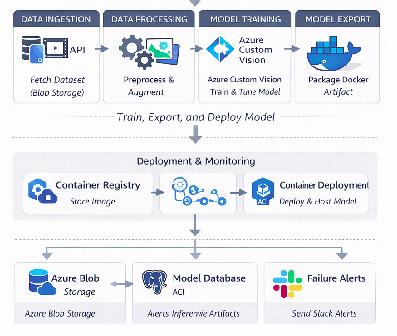
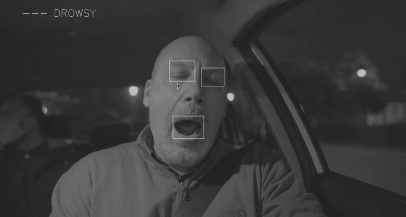
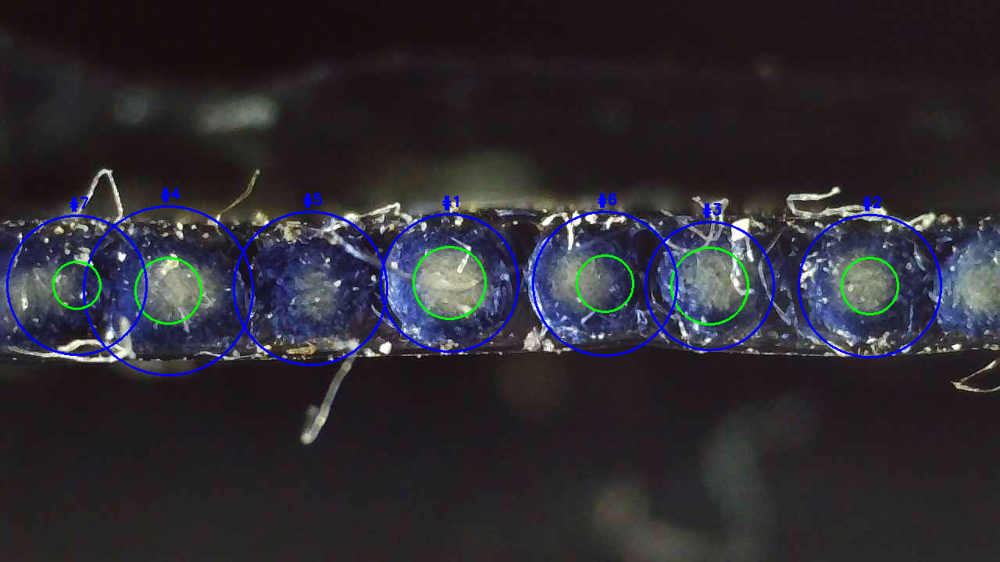
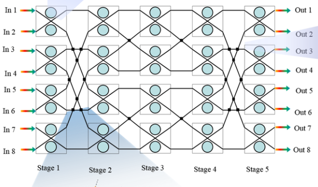
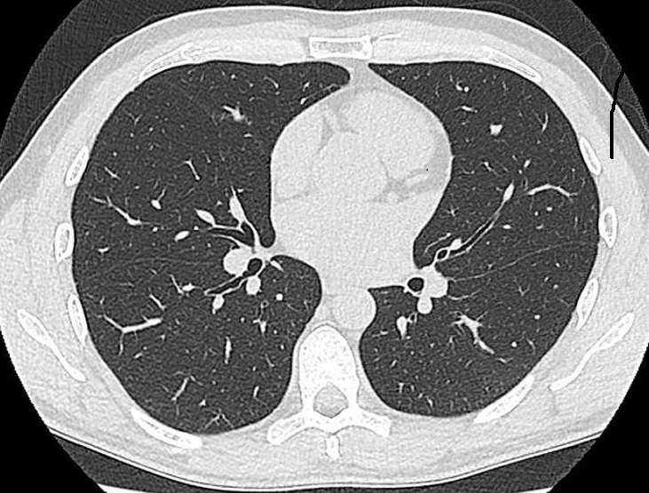
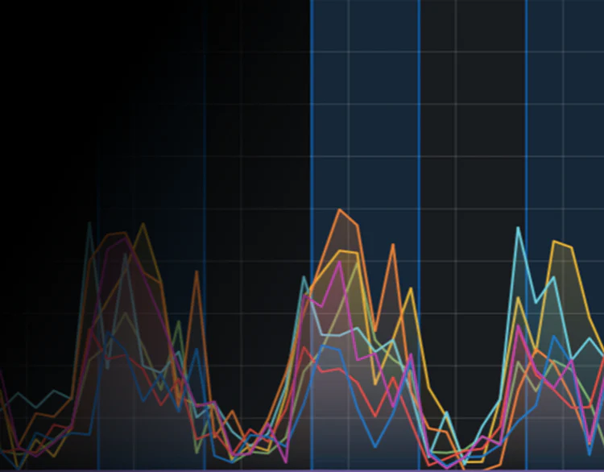
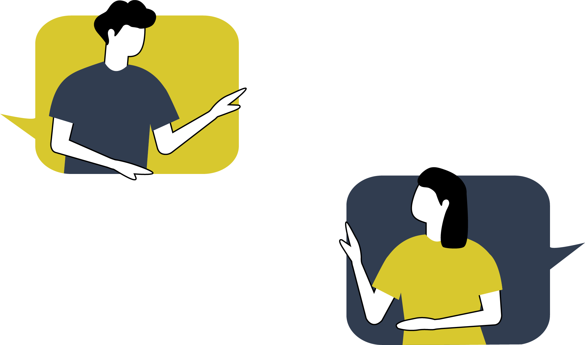

I'm a Machine Learning Engineer with a Bachelor's in Software Engineering from NUST (2023) and have been working in data analytics and machine learning since 2022.
I freelance in data analytics and machine learning and have shipped projects spanning Computer Vision pipelines, MLOps workflows, Deep Learning models and full-stack AI and Data Analytics dashboards for clients ranging from logistics companies to research labs. In 2022, I completed an internship at the Optical Networking Technologies Research Lab at NUST, where I worked on applying machine learning to Software-Defined Optical Networks, focusing on network path optimization and noise pattern analysis.
Recently, I've been going deep on Generative AI and agentic systems, learning about designing multi-agent pipelines that combine tool use, LLM reasoning and orchestration to automate complex real-world workflows. Computer Vision is a long-standing interest and so is the full ML lifecycle i-e clean data pipelines, reproducible experiments and models built to work outside the notebook.
Designed and implemented an automated MLOps pipeline that operationalizes the training, deployment and lifecycle management of object-detection models used for real-world object recognition systems.

Built a real-time driver drowsiness detection system using computer vision and CNNs deployed on Raspberry Pi with infrared camera monitoring and sensor-based accident detection.

Developed a computer vision system that automatically detects and measures ring structures in microscopic fiber cross-section images using OpenCV-based geometric analysis.

Built a multi-label XGBoost classifier chain model to predict photonic switch control states from optical wavelength inputs in Software Defined Optical Networks.

This project is designed for chest cancer classification using the keras Model API and MLflow for experiment tracking..

Built an interactive neuroscience data analysis platform that visualizes temporal activity patterns and performs statistical behavioral analysis.

A production-grade multi-agent AI system that automates end-to-end marketing campaign creation for retail businesses.
This project aimed to deliver real-time insights and analytics to a logistics firm for improved decision-making. The solution helps optimize inventory management and trading activities for enhanced operational efficiency in the logistics sector.
This project was completed while learning about LLMs in the course Generative AI with LLMs taught by DeepLearning.ai.

"Noor is not just skilled but also reliable, communicative, and detail-oriented—qualities that are essential for machine learning and data engineering projects. She consistently delivered work of high quality, ahead of schedule, and exceeded expectations every time. Noor is a fantastic asset for any team or project in Machine Learning engineering, and I highly recommend her for anyone looking for expertise in data science and dashboard development."
"I’ve worked on many projects with her in ML. The deliveries are always timely, and more than I want. ... Communication including responses are clear, timely, and well explained often explaining more than needed, setting clear expectations, and showing different pathways we could take. She is also able to again and again incorporate things beyond just simple ML from specific output filing, data processing beyond ml. I’ve worked with many and by far she the best and will keep coming back "
"Huda was instrumental in engineering a core feature of the Living Image platform. I contacted her for help after being told our model could only be successfully trained with limited data. She reanalyzed the problem from a new direction, utilizing Azure Custom Vision and Python code to better process and train the data. She was humble and very easy to work with as a contractor. Ultimately, her solution delivered high precision with less training data. She even suggested additional training captured from video, which yielded an even higher precision rate. After completing the core feature, she dockerized it and created a deployment pipeline to Azure. She is extremely knowledgeable with machine learning, and I look to continue working with her."
"Working with Hudiye is always an amazing experience. She is an outstanding developer who is highly skilled at programming Streamlit dashboards, consistently delivering excellent work with a quick turnaround time. Throughout our projects together, she has proven to be a great communicator—always answering questions clearly and providing creative, useful solutions. It is a pleasure to work with her, and I am thrilled with the results she delivers!"